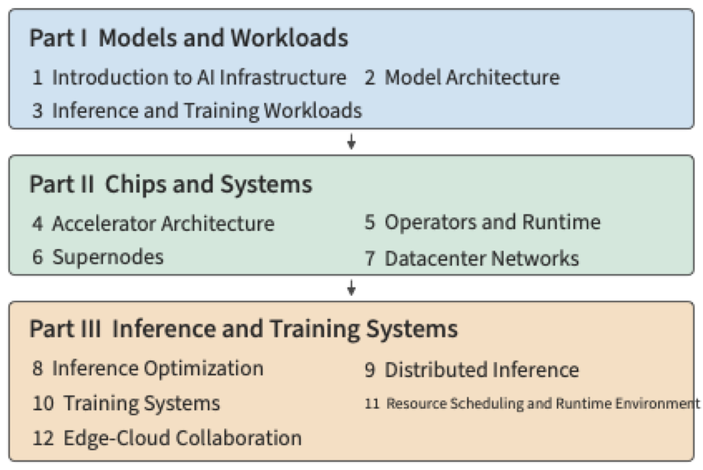

Preface¶
My previous book, Understanding AI Agents in Depth, discussed the architecture design and engineering practice of agents. In the process of talking with readers and answering their questions, I became increasingly aware that developing good model-based applications also requires understanding the infrastructure on which such applications run. On one hand, there is the model itself: how it processes input, generates output, and interacts with context and environment. On the other hand, there is the model's execution system: where parameters and context state are stored, how computation executes, how multiple accelerators collaborate, and how model invocations connect to tool programs. This book grew out of that realization — it discusses the infrastructure that supports model training and inference: AI Infrastructure.
To understand why application developers also need this underlying knowledge, consider a familiar analogy. Most software engineers don't need to develop an operating system, a compiler, or a chip themselves, but they still need to learn operating systems, compiler theory, and computer architecture. This knowledge helps us understand the abstractions that programs depend on, and the implementations behind those abstractions. Allocating a block of memory, reading a file, calling a function — these look like simple operations, but each carries its own resource and time cost. Understanding these costs is what lets us explain why a program is slow and how to improve it. Developing applications based on models requires the same kind of foundation. How large a model to choose, how much context to retain, how many concurrent requests to allow, whether to place a task locally or in the cloud — all of these change the work the system needs to accomplish.
The Shift of Programming Abstraction: From Operating Systems to Model Context¶
During my PhD, jointly supervised by Microsoft Research Asia and the University of Science and Technology of China, I worked on computer systems research, and I naturally grew accustomed to understanding applications through the division of labor among operating systems, compilers, and hardware. The two top conferences in this field, SOSP (Symposium on Operating Systems Principles) and OSDI (Operating Systems Design and Implementation), both include "OS" — operating systems — in their names. Traditional operating systems need to support a wide variety of applications, and compilers and hardware provide general-purpose capability for programs that are not known in advance. In our past system optimization work, we always had to weigh programmability against performance, and sacrificing programmability for extreme performance was rarely a good choice.
But today, the LLM is the single most important application. In AI inference and training systems, everything from operator execution to distributed scheduling can be optimized for a specific model and accelerator architecture, opening up new room for cross-layer joint optimization. I believe that the shift of programming abstraction from operating systems to model context is one of the most important changes in computer systems in decades. In a sense, the model has become the operating system of the LLM era, and AI Infrastructure has become the computer architecture of the LLM era. Computer Architecture: A Quantitative Approach was my introductory book in the field of computer architecture, and the AI Infrastructure field still lacks a book that starts from hardware constraints and model architecture and quantitatively derives system design. That is the motivation for writing this book.
From Order-of-Magnitude Estimation to System Design¶
In my early years working on datacenter acceleration, whether I was dealing with model inference, network processing, or storage access, I would always first do an order-of-magnitude estimation: how much computation does a task need to complete, and how much data does it need to read and write? Can the GPU memory hold the data that must remain resident? Can storage and interconnect bandwidth meet the data supply requirements? What lower bounds on time do computation, read/write, and steps that must execute serially each impose? The "back-of-the-envelope estimation" that Jeff Dean advocates — rough calculation with pen and paper — reflects exactly this habit. A few steps of calculation can often help us judge whether a direction is worth pursuing, and which problem should be tackled first.
There is also a more direct reason that pushed me to start writing. In conversations with AI Infrastructure practitioners, I found that many people are familiar with models and frameworks but have not yet developed an order-of-magnitude intuition for capacity, bandwidth, compute, and latency. Being able to name the techniques used in a design is a different skill from being able to judge whether it is feasible and roughly what level of performance it can reach. I hope this book can help readers build the latter skill.
In order-of-magnitude estimation, humans are not the only ones prone to error — AI is too. Recently, I tried asking models like GPT-6 Astra and Claude Fable 5.1 to help estimate the performance of model inference or training systems, or of new chip architectures. These models can write out formulas and produce seemingly precise numbers, yet they still miss basic constraints that determine the result: sometimes they count only weight reads and forget that attention also needs to read the KV cache; sometimes they estimate read time without checking whether weights, KV cache, and runtime workspace together fit in GPU memory; sometimes they project speed from peak compute without checking whether storage bandwidth can sustain the data supply; sometimes they divide the workload evenly across multiple cards while omitting inter-card communication; and sometimes they arrive at a high throughput figure without considering the latency from serial dependencies and communication round trips. Missing any single one of these constraints can throw the conclusion off by several times, or even by orders of magnitude.
Therefore, the method I hope runs through this book is: derive the design from the constraints. First clarify the task and quality requirements, then enumerate computation, storage, communication, and dependencies, check whether the capacity of storage resources such as GPU memory is sufficient, whether storage and interconnect bandwidth meet the computation's data requirements, and which waits caused by dependencies cannot be eliminated — only then discuss how the model should be divided, where state should be placed, and how execution should be organized. Only by incorporating every known basic constraint one by one can we rule out schemes that are clearly impossible; the overhead and variation present in real systems must still be corrected through measurement. An estimate doesn't need to be precise from the start, but you must know what you have accounted for, and what you haven't.
From Operator Acceleration to Multi-Card Interconnect¶
Constraints are the source of design. In 2016, while interning at Microsoft Research Asia, I worked with a team exploring the use of FPGAs to accelerate the deep neural networks used in Microsoft Bing's search ranking. Model weights were repeatedly moved from off-chip memory into the chip, which limited computation speed. I wondered: could we split the model across multiple FPGAs, keeping each part in its own on-chip storage, and pass only intermediate results over a high-speed network? I excitedly told this idea to my advisor, Professor Ningyi Xu, and he said, "That's called 'model parallelism.'" Where computation should be placed, how data should flow, and what specialization could save — these were questions I was already thinking about repeatedly at the time. In those years, my advisor Dr. Lintao Zhang repeatedly reminded me: optimization must be pushed to the limits that physics allows. Later, in the KV-Direct paper, I wrote "close to the physical limits of the underlying hardware," and from that I developed a habit: first compute, from first principles, the ceiling that the hardware allows, then see how far the system is from that ceiling. This habit has run through my later work, and it runs through this book too.
After joining Huawei in 2019, I worked on AKG, the automatic operator generation project for the deep learning framework MindSpore. This work continued the earlier hardware-software co-design approach: converting model computation into programs suited to execution on the Ascend NPU, with the compiler arranging data tiling, storage, and execution order. I still remember searching everywhere for a suitable algorithm to fuse the softmax operator. After reading NVIDIA's 2018 research on online softmax, I finally found a way to achieve the fusion. It was only later that I realized I had, at the time, stumbled onto one of the core ideas behind what would later become the FlashAttention algorithm: combining online reduction with tiling and fusion to reduce the storage and read/write of intermediate results.
In 2020, I joined the Unified Bus (UB) project and began researching accelerator collaboration at much larger scale: how could tens of thousands of processors efficiently work together to complete a single computation?
When we first started pushing this within Huawei, we ran into plenty of skepticism from other departments. At the time, someone asked: "Right now models train on at most eight cards — you're building something for ten thousand cards, when will you ever have ten thousand cards?" Back then, the entire company didn't have ten thousand cards. For people accustomed to single-machine, multi-card training, designing an interconnect for a ten-thousand-card scale really did seem far removed from any immediate need.
The reason we reached this judgment was that we saw a different body of evidence. In 2019, Dr. Kun Tan plotted the growth trend of AI compute demand as a scatter chart and saw that demand was growing far faster than the improvement in single-chip capability, which prompted the push for high-performance interconnect research aimed at tens of thousands of cards. I joined the project in 2020, and the publication of the GPT-3 paper provided further evidence for this direction. If the compute required for model training kept growing this way, more accelerators would need to work together; interconnect architecture research and implementation take time, and starting only after demand fully materializes might well be too late.
Today, UB has been applied in the Ascend 910C and 950 systems. As of this writing, the UB-based NPU AI training cluster architecture is the only domestic architecture that supports scales beyond ten thousand cards. Looking back now, the necessity of ten-thousand-card training is not hard to understand. System design needs to see both the workload in front of us and the conditions that are changing. That eight cards could handle the tasks familiar at the time was direct experience; that larger compute demand would drive larger-scale collaboration was a judgment about the future. To convince others, you need to clearly lay out the trend, the resources, and the cost underlying that judgment.
From model inference acceleration to AKG, and on to UB, this work spanned very different scales, but the problem I kept running into was the same: where is the data that computation needs, and does the cost of moving that data outweigh the necessary computation? If we change the abstractions of the system and the application so the system has access to more information from the application, can we reduce the cost of moving data? Each of these efforts began with a shift in some ratio: off-chip memory could not deliver data as fast as computation needed it, which led us to accelerate Bing ranking with FPGAs; demand for compute grew faster than single-chip capability, which led us to pursue ten-thousand-card interconnects.
After leaving Huawei to start my own company in 2023, these questions came back to me in a different form. The agents we build need to interact with people in real-time speech. After a user finishes speaking a sentence, how long do they wait before hearing a response? If a call lasts half an hour, what is the cost of serving it?
In 2024, we launched real-time speech interaction before GPT-4o was released. Later, comparing against the real-time speech API based on GPT-4o, our running cost was about one-hundredth of the cost of calling it. I still remember that the latency of our first voice call demo, at the end of 2023, was as high as 5 seconds. We broke the entire interaction pipeline apart, first estimating how much computation and how much data reading a single model inference required, then improving it step by step; after that we continued optimizing network transmission, database access, and so on. Latency dropped this way from 5 seconds to 2.5 seconds, then to 1 second, and eventually down to about 500–600 milliseconds.
This experience taught me that there is a very direct connection between application development and infrastructure. For the same real-time speech scenario, a latency difference of several times can mean a completely different product experience; a cost difference of one order of magnitude can change what business models are viable.
What I Hope This Book Makes Clear¶
This connection between applications and infrastructure exists within model development itself, too. Among the best foundation model teams, I increasingly see a way of working that crosses the boundaries of division of labor: the person who best understands Infra works on the algorithm, the person who best understands the algorithm works on data, and the person who best understands data works on Infra. What this expresses is a depth of mutual understanding. Only when algorithm designers know the hardware's capacity, bandwidth, and communication limits can they exploit these conditions in the model architecture; only when data engineers understand how the model learns can they judge which samples and training tasks are most valuable; only when Infra engineers understand the organization, length, and usage patterns of the data can they truly direct system resources toward effective training and inference.
This kind of cross-layer coordination has already appeared in recent model designs. DeepSeek V4 and V4.1 are good examples. V4 fully accounted for Infra efficiency in its model architecture: combining local windows, context compression, and sparse selection to reduce the state that must be saved for long contexts and the data that must be read repeatedly. The constraints among GPU memory capacity, storage bandwidth, and computation directly shaped how the model represents and uses context.
V4.1 Flash goes further, using an asymmetric Causal Encoder-Decoder (CED) architecture to redivide the responsibilities of understanding and generation, reallocating computational investment for agent workloads with heavy input and relatively light output — showing that requirements for system efficiency can drive innovation in the model architecture itself.
I hope readers can build this kind of cross-layer understanding too: on seeing a model structure, being able to picture what work it demands of the accelerator; on seeing a hardware capability, being able to judge how the model and its execution should change to actually make use of it.
A thread running through all of this analysis is data movement. Compute units need to fetch weights and intermediate results, multiple accelerators need to exchange the data each has computed, and remote services need to receive input and return results. What we see is the model generating an answer; what happens underneath is a series of reads, computations, saves, and handoffs. Where data sits, how many times it is reused, which interfaces it must pass through, and whether downstream work must wait for it — all of this affects execution efficiency.
For this reason, this book repeatedly asks five questions: what is being moved, how much, how many times, through where, and who must wait for it. From the memory hierarchy on a chip, to the supernode (a group of accelerators tightly cooperating through high-bandwidth interconnect) and the datacenter network, to the division of labor between terminal, edge, and cloud (edge-cloud coordination), these five questions help us find the quantities that need to be computed at each level. Retaining data can reduce redundant computation, but it consumes capacity; expanding parallel scale can spread out the work, but it increases communication; reducing transmission may require more local computation, and may also change result quality.
Answering these five questions requires computing every quantity explicitly, which is why this book adopts "Quantitative Analysis and System Design" as its subtitle. Computer Architecture: A Quantitative Approach provides an excellent model for this style of analysis. This book also aims to carry the estimation habit described above into every layer of design: starting from the model's workload, checking it against resource constraints, explaining why a particular execution approach was chosen, and how that choice should be revisited when conditions change.
Structure of the Book¶
The twelve chapters unfold in the order "understand the work's requirements — understand the execution resources — organize the complete system," as shown in Figure 0-1. Part I is Models and Workloads (Chapters 1–3), which establishes the analytical method and explains where computation, data volume, and task dependencies come from. Part II is Chips and Systems (Chapters 4–7), moving from single-accelerator execution to multi-accelerator collaboration, explaining how resources take on this work. Part III is Inference and Training Systems (Chapters 8–12), studying how to organize requests, model state, and the training process, and extending to task execution environments and edge-cloud deployment.

Below are the main questions each chapter aims to answer. You can start by finding the questions you care about, then check which earlier chapters provide the foundation for them.
Part I: Models and Workloads
- Chapter 1, First Look at AI Infrastructure: How do we get an overall picture of the system, and use a few key metrics to estimate a single model execution?
- Chapter 2, Model Architecture: How do a model's computation, parameters, and context state give rise to resource requirements?
- Chapter 3, Inference and Training Workloads: How do request arrivals, multi-turn invocations, multimodal input, and the training process change resource requirements and waiting time?
Part II: Chips and Systems
- Chapter 4, Accelerator Architecture: How do a chip's compute, storage, and data paths work together, and what workloads are they suited to?
- Chapter 5, Operators and Runtime: How should operators and execution be organized to reduce redundant read/write, submission, and waiting?
- Chapter 6, Supernodes: How should a model divide work across multiple accelerators, and how large should the collaboration group be?
- Chapter 7, Datacenter Networks: How does data get transmitted across accelerators, and how do handoff rules, congestion, and failures affect computation?
Part III: Inference and Training Systems
- Chapter 8, Inference Optimization: How should batching, requests, and caching be arranged to improve serving efficiency for a given accelerator configuration?
- Chapter 9, Distributed Inference: Where should computation and state be placed, and how should division of labor, sharing, and scaling be organized?
- Chapter 10, Training Systems: How should training state, communication, and recovery be arranged to make effective training progress within a deadline?
- Chapter 11, Resource Scheduling and Execution Environments: How do model services, tool environments, and shared resources get organized into a complete task system?
- Chapter 12, Edge-Cloud Coordination: Given real-world transmission and interaction requirements, how should a task's deployment location among terminal, edge, and cloud be chosen?
As you read further, the analysis of the same question keeps adding new conditions: at first only weight capacity is considered, then context state must also be computed; at first single executions are compared, then concurrency, handoffs, and failure recovery must also be confronted. I hope you will follow these changes and go back to check the judgments you made earlier. This is also why I put models, chips, networks, and service systems together in a single book: together, they determine how a task actually gets accomplished.
How to Read This Book¶
If you want to build a systematic understanding from the ground up, I recommend reading Chapters 1–3 first, learning to estimate a single execution and understanding what demands models and workloads impose, then reading the other two parts in order. Readers with different backgrounds can also, on this common foundation, choose their own points of focus.
- Model and application developers may want to focus on the inference serving material in Chapters 8 and 9, and the task environments and deployment material in Chapters 11 and 12. When you run into capacity, operator, or communication problems, go back to Chapters 4–7 to trace the cause.
- Systems and network engineers may want to focus on execution and accelerator collaboration in Chapters 5–7, then look at Chapters 9 and 10 to see how these mechanisms affect distributed inference and training.
- Chip and architecture engineers may want to focus on Chapters 4–7, and combine them with the task worked examples in later chapters to check how the hardware metrics they already know translate into actual serving capability.
Whichever reading path you choose, I especially recommend that you try estimating things yourself before looking at the answer. Take a sheet of paper and write down data volume, processing capability, and the steps that must be waited for, and you'll usually turn up something worth questioning further. If your result differs from the book's, first check whether both sides are using the same conditions; if the conditions match, keep looking for work that was missed or double-counted. This kind of back-and-forth checking is often more valuable than simply memorizing a conclusion.
The exercises in the book are divided into core and extended exercises: core exercises help you complete the main derivation for the chapter, and extended exercises can be chosen according to your interests and project needs. Companion experiments, computational tools, and reference materials are organized in the book's open-source repository:
Companion open-source repository: https://github.com/bojieli/ai-infra-book
The repository contains three kinds of material, meant to be used alongside the main text:
- Experiments and calculations. Experiments organized by chapter come with instructions for running them, input conditions, and result logs; companion computational tools help you recompute the numbers in the book, or change a set of conditions and observe how the conclusions shift.
- Papers and technical references. Indexes and source records for relevant papers, open-source software, and official technical documentation, to make it easy to keep reading along the questions raised in the book and to check specific claims against their sources.
- Chip and model parameter tables. Hardware specifications and model configurations gathered from research, including compute capability, storage capacity and bandwidth, interconnect capability, as well as model layer counts, dimensions, mixture-of-experts configuration, and context state — the information needed for these estimates. The parameter tables are meant to be used together with sources and computational tools, helping you check the conditions under which a number applies before plugging it into your own analysis.
You can navigate from the repository's homepage to the experiments, quantitative-calculation, and reference-material directories, and run things according to each project's instructions. Experiments that need a specific accelerator will note the required environment and accelerator conditions; if you don't have the corresponding accelerator, you can start by analyzing the existing records and then recompute after changing the inputs. Models and hardware keep changing, and this material will continue to be supplemented and revised along with the book.
As you read this book, you can also bring your own models, machines, and business problems along. Swap out the inputs used in the book and see whether the conclusions change, then decide what's worth measuring next. I hope these examples can serve as a starting point for analyzing your own problems.
Prerequisites¶
This book is aimed at readers who have programming experience and want to understand model execution and system design. The following background will help you follow the derivations and experiments in the book.
- Programming and tools. Being able to read and modify simple Python programs, and being comfortable with the command line and basic dependency installation. The foundational exercises start from hand calculation, small scripts, and existing experiment logs; experiments that use a specific accelerator will note the required conditions separately.
- Mathematics. Understanding vectors, matrix multiplication, and basic algebra, and being able to do unit conversions. Basic knowledge of averages and probability helps with analyzing workloads and waiting; intuition about derivatives and gradients helps with reading the training chapters.
- Computer systems. Understanding the basic purposes of processes, memory, files, and network communication. Model structures, parallelism strategies, and specialized hardware mechanisms will be introduced gradually as they come up.
If you have already called a model API, or run a model on your own machine, you can bring that experience into the worked examples in this book: why does a long context slow things down, why does everyone wait longer once concurrency increases, why did switching accelerators not deliver the speedup you expected? These are all excellent starting points for reading.
You don't need to wait until you're familiar with every layer before starting to read. In doing systems research and engineering practice, I have always needed to learn the knowledge of adjacent layers around a specific problem. When you run into an unfamiliar concept, you can first grasp the problem it's meant to solve, and come back to the implementation details later.
I hope that after finishing this book, faced with a new model, a new accelerator, or a new deployment requirement, you will be able to sketch out the execution process, compute a few key metrics, identify the assumption most in need of verification, and revise your choices based on what you observe. Your conclusions may differ from the book's; being able to explain where the difference comes from is itself a sign of understanding the system.
Acknowledgments¶
First, thanks to the GPT-6 Astra model. I had wanted to write a book like this for a long time, distilling my years of thinking about computer systems and AI Infrastructure, but I never managed to find enough time. A while ago, I finally distilled my thinking into an outline. After GPT-6 Astra was released, I had an agent work continuously for a week, helping me research relevant papers, track the progress of open-source software, run experiments, and gradually turn all of it into a book. What you're reading now is still only a first draft. I'm still continuously distilling my own thinking and revising the content of the book.
Thanks to my collaborators over the years in networking, systems, and AI Infrastructure, with whom I have done research and co-authored papers. Thanks also to the leaders, experts, and colleagues at Microsoft and Huawei who guided me and worked alongside me on projects such as programmable-NIC acceleration, operator generation, and the Unified Bus large-scale network interconnect. I can't list everyone's name here, but from proposing hypotheses, through theoretical analysis and experimental verification, to actually building production-grade systems, I learned so much from all of you. Many of the ideas in this book owe their existence to the days we spent discussing, deriving, experimenting, and solving problems together.
Finally, I want to thank my wife, Jiaying Meng. As with writing Understanding AI Agents in Depth, she has always supported me in finishing what I set out to do. These past few days, she even gave me her own Codex token allowance, so that I would have enough tokens to keep pushing this book's writing forward.